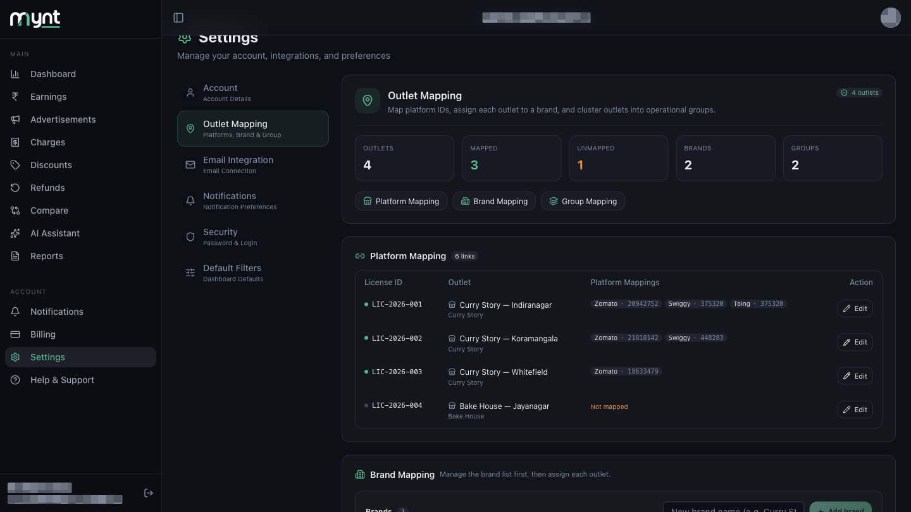
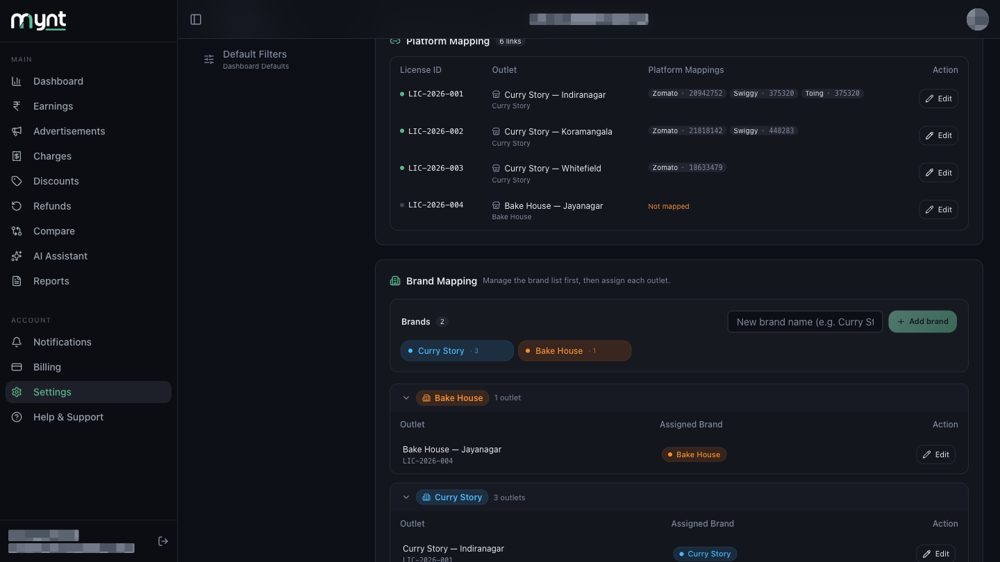
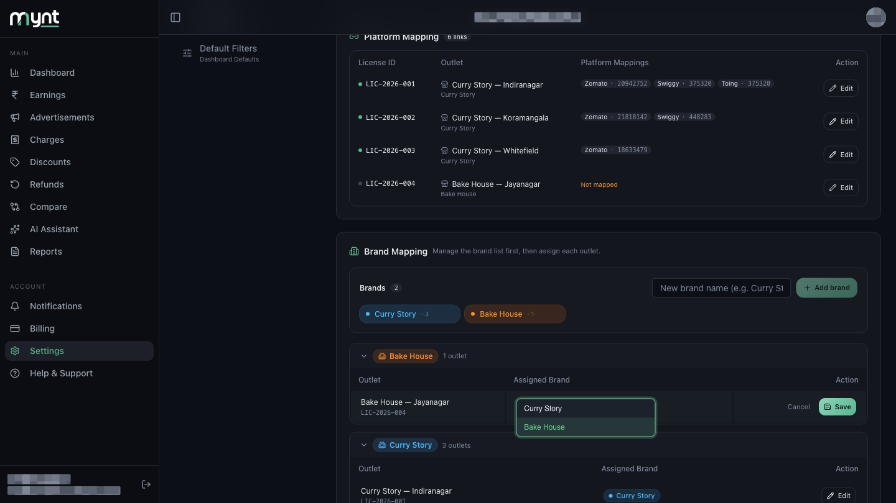
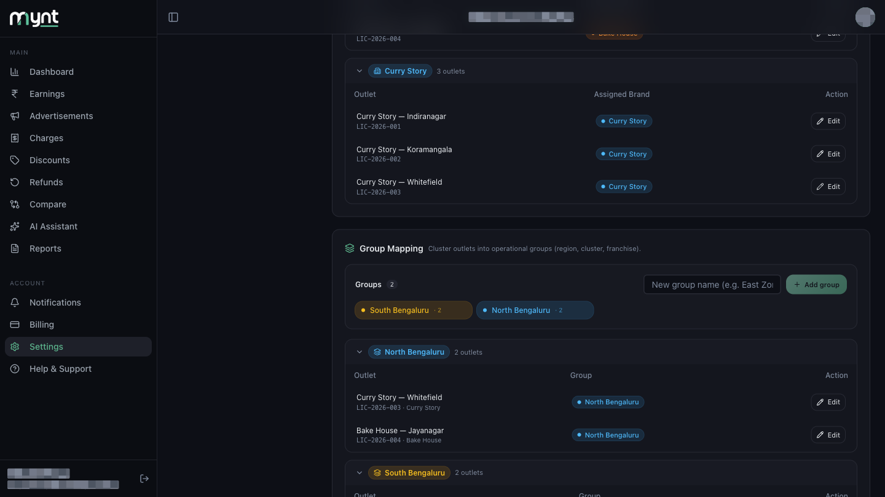

| Platform Mapping | Links platform IDs to an outlet — required for data to appear. Example: Zomato 20942752 → Curry Story — Indiranagar |
|---|---|
| Brand Mapping | Says which brand an outlet trades as. Example: Curry Story — Indiranagar → Curry Story |
| Group Mapping | Clusters outlets however you like. Example: Curry Story — Indiranagar → South Bengaluru |
Platform Mapping is required for data. Brand and Group are optional, but they are what let you filter Reports and Dashboard views later.
| Outlets | Total active locations |
|---|---|
| Mapped | Outlets with at least one platform ID |
| Unmapped | Outlets still missing IDs — orange when above zero |
| Brands | Brands in your list |
| Groups | Groups you have created |

Brands are managed in two parts: build the list first, then assign outlets to it.
Type a name into New brand name and tap + Add brand. Each brand then appears as a chip showing how many outlets use it.
Hover a chip to Rename or Delete it. A brand can only be deleted once no outlets are assigned to it — otherwise Mynt tells you how many still need reassigning.

Below the list, outlets are grouped into a bucket per brand, plus an Unassigned bucket. To move one, tap Edit on its row, pick a brand from the Assigned Brand dropdown, and save.

One outlet belongs to exactly one brand — never two.
Groups work the same way, for whatever grouping suits you — region, cluster, franchisee.
Add one with New group name → + Add group. Outlets with no group sit under Ungrouped. To move an outlet, tap Edit on its row and pick a group.

| Outlet | Platform IDs · Brand · Group |
|---|---|
| Indiranagar | Zomato + Swiggy · Curry Story · South Bengaluru |
| Koramangala | Zomato + Swiggy · Curry Story · South Bengaluru |
| Whitefield | Zomato · Curry Story · North Bengaluru |
| Jayanagar | Swiggy · Bake House · North Bengaluru |
| HSR Layout | Zomato + Swiggy · Bake House · South Bengaluru |
| Hebbal | Zomato · Bake House · North Bengaluru |
Reports can then be filtered to one brand ("Curry Story only") or one group ("North Bengaluru").
Or open Help & Support in Mynt and raise a ticket.